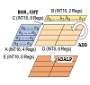
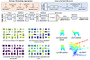
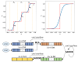

Binary Neural Networks: A Survey
Haotong Qin, Ruihao Gong, Xianglong Liu*, Xiao Bai, Jingkuan Song, Nicu Sebe
Pattern Recognition (PR), 2020
@article{Qin:PR20,
author = {Haotong Qin and Ruihao Gong and Xianglong Liu and Xiao Bai and Jingkuan Song and Nicu Sebe},
title = {Binary Neural Networks: A Survey},
booktitle = {Pattern Recognition},
year = {2020},
}

BiFSMN: Binary Neural Network for Keyword Spotting
Haotong Qin, Xudong Ma, Yifu Ding, Xiaoyang Li, Yang Zhang, Yao Tian, Zejun Ma, Jie Luo, Xianglong Liu*
IJCAI, 2022
@inproceedings{Qin:IJCAI22,
author = {Haotong Qin and Xudong Ma and Yifu Ding and Xiaoyang Li and Yang Zhang and Yao Tian and Zejun Ma and Jie Luo and Xianglong Liu},
title = {BiFSMN: Binary Neural Network for Keyword Spotting},
booktitle = {IJCAI},
year = {2022},
}
BiBERT: Accurate Fully Binarized BERT
Haotong Qin, Yifu Ding, Mingyuan Zhang, Qinghua Yan, Aishan Liu, Qingqing Dang, Ziwei Liu, Xianglong Liu*
ICLR, 2022
@inproceedings{Qin:ICLR22,
author = {Haotong Qin and Yifu Ding and Mingyuan Zhang and Qinghua Yan and Aishan Liu and Qingqing Dang and Ziwei Liu and Xianglong Liu*},
title = {BiBERT: Accurate Fully Binarized BERT},
booktitle = {ICLR},
year = {2022},
}

BiPointNet: Binary Neural Network for Point Clouds
Haotong Qin, Zhongang Cai, Mingyuan Zhang, Yifu Ding, Haiyu Zhao, Shuai Yi, Xianglong Liu*, Hao Su
ICLR, 2021
@inproceedings{Qin:iclr21,
author = {Haotong Qin and Zhongang Cai and Mingyuan Zhang and Yifu Ding and Haiyu Zhao and Shuai Yi and Xianglong Liu* and Hao Su},
title = {BiPointNet: Binary Neural Network for Point Clouds},
booktitle = {ICLR},
year = {2021},
}
Forward and Backward Information Retention for Accurate Binary Neural Networks
Haotong Qin, Ruihao Gong, Xianglong Liu*, Mingzhu Shen, Ziran Wei, Fengwei Yu, Jingkuan Song
IEEE CVPR, 2020
@inproceedings{Qin:cvpr20,
author = {Haotong Qin and Ruihao Gong and Xianglong Liu and Mingzhu Shen and Ziran Wei and Fengwei Yu and Jingkuan Song},
title = {Forward and Backward Information Retention for Accurate Binary Neural Networks},
booktitle = {IEEE CVPR},
year = {2020},
}
QDrop: Randomly Dropping Quantization for Extremely Low-bit Post-Training Quantization
Xiuying Wei, Ruihao Gong, Yuhang Li, Xianglong Liu*, Fengwei Yu
ICLR, 2022
@inproceedings{Wei:ICLR22,
author = {Xiuying Wei and Ruihao Gong and Yuhang Li and Xianglong Liu and Fengwei Yu},
title = {QDrop: Randomly Dropping Quantization for Extremely Low-bit Post-Training Quantization},
booktitle = {ICLR},
year = {2022},
}
Diversifying Sample Generation for Accurate Data-Free Quantization
Xiangguo Zhang, Haotong Qin, Yifu Ding, Ruihao Gong, Qinghua Yan, Renshuai Tao, Yuhang Li, Fengwei Yu, Xianglong Liu*
IEEE CVPR (oral), 2021
@inproceedings{Zhang:cvpr21,
author = {Xiangguo Zhang and Haotong Qin and Yifu Ding and Ruihao Gong and Qinghua Yan and Renshuai Tao and Yuhang Li and Fengwei Yu and Xianglong Liu},
title = {Diversifying Sample Generation for Accurate Data-Free Quantization},
booktitle = {IEEE CVPR},
year = {2021},
}
Towards Unified INT8 Training for Convolutional Neural Network
Feng Zhu, Ruihao Gong, Fengwei Yu, Xianglong Liu*, Yanfei Wang, Zhelong Li, Xiuqi Yang, Junjie Yan
IEEE CVPR, 2020
@inproceedings{Zhu:cvpr20,
author = {Feng Zhu and Ruihao Gong and Fengwei Yu and Xianglong Liu and Yanfei Wang and Zhelong Li and Xiuqi Yang and Junjie Yan},
title = {Towards Unified INT8 Training for Convolutional Neural Network},
booktitle = {IEEE CVPR},
year = {2020},
}

Differentiable Soft Quantization: Bridging Full-Precision and Low-Bit Neural Networks
Ruihao Gong, Xianglong Liu*, Shenghu Jiang, Tianxiang Li, Peng Hu, Jiazhen Lin, Fengwei Yu, Junjie Yan
IEEE ICCV, 2019
@inproceedings{Gong:iccv19,
author = {Ruihao Gong and Xianglong Liu and Shenghu Jiang and Tianxiang Li and Peng Hu and Jiazhen Lin and Fengwei Yu and Junjie Yan},
title = {Differentiable Soft Quantization: Bridging Full-Precision and Low-Bit Neural Networks},
booktitle = {IEEE ICCV},
year = {2019},
}